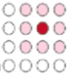
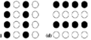
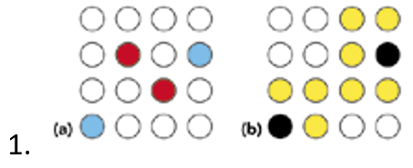
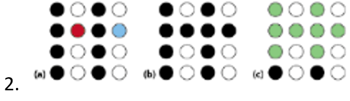
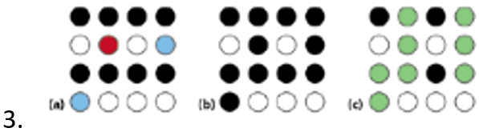
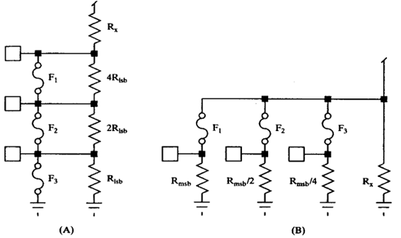

- Ceramic更贵，属于高端材料，不会用在手机、电脑里，多用于军事等需要极高hermeticity的情况。
- Ceramic的bond一般为eutectic（共熔的） solder of gold and silicon，也很贵，thermal conductivity极好。
- Ceramic制造图解（下左图）。图中的Al2O3即为一种ceramic：
- Plastic的一大区别是，他不像ceramic用lid，而是直接fill-in包住整个chip，称为plastic "encapsulated" microcircuit (PEM)（上右图）。 因此不像ceramic还能打开盖子看到内部电路。
- Plastic的特征：low power（因为plastic导热性不好），moderate I/O count，lenient hermeticity requirements （虽然看似包住了整个电路，但plastic的材料容易渗透moisture。适合life span为3-5年，比如更新换代快的手机电脑，不适合20年的应用）。
PG Flow
PG = Pattern Generation，即ASIC生成最后的photomask和manufacturing database。
除了chip本身的设计，还有一些很重要但容易被忽视的topic，比如packaging, thermal management, shock & vibration等。 举例来说，overheating造成了70%的chip failure，可见thermal的重要性。 一个很好的analogy是，chip本身就像汽车的引擎，虽为核心，但如果不配上底盘、轮子和外壳，依然无法使用。 因此，本篇主要cover chip本身以外的各种支持性事物。
In the Die
除了核心电路以外，每个layout还有一些其他支持性的结构。
Pad ring: 一个IC的pad ring包括scribe streets, pads, ESD structures, and guard rings。
| Scribe streets | Scribe意为划线器。Scribe street指划片切割的时候，die与die之间给锯子留出的切割线 |
| Pads | 包括bondpads, trimpads, testpads |
| ESD strucures | 不仅限于ESD diodes，还包含其他一些结构。（所以ESD diodes是layout的一部分） |
| Guard ring | 防止latch up。Latch up即chip的VDD和ground产生相连。 |
ESD Diodes
|
Diode本身的工作原理见右图。ESD diodes主要利用reverse breakdown这个state突然开始增加的reverse current。 在系统中，如下图添加ESD Protection diodes。（DUP = device under protection）在normal operation期间，diode相当于不存在。而在ESD event时，如果voltage超过reverse breakdown voltage，diodes就会开始conduct，将ESD energy shunt到ground，保护剩余系统。 |

Packaging
|
Packaging的两大作用：
一个有趣的比喻是，package就像电源插头，内部裹着真正的电路，但必须要封进插头才能用。 另外，由于package是heat flow path的第一步，所以heat dissipation也很重要。 Key Features: I/O count, Hermeticity（气密性，防潮）, Heat dissipation |
|
|
最基础的结构：
|

|
比较简单的package：
- DIP (dual in-line): 平行两排管脚
- QFN (quad flat no-lead): 四周放管脚
随着pin count升高，需要用到更现代的package，在接下来的section介绍。
PGA/BGA/LGA
PGA (Pin Grid Array):- 是最古老的。中间chip正下方一般留空，可以放一大块Cu作heat sink，或者放landside capacitors。
- 整个package的中间是chip，底部是substrate（比如绿色的FR4），顶部是lid。
- Substrate底下的pin array插入PCB上对应的socket（插孔）。
BGA (Ball Grid Array):
|

|
- Contact是平面。LGA最大的特点是pins ("lands")在socket里而非在chip上。 Socket会伸出竖S形的pin，与LGA的底面接触。通过在顶面施力来形成contact，去除force则断开连接。
Flip Chip
大约在1960年首次出现，目前正在广泛使用。好处包括：
|

|
制作过程（及名字由来）见下图，有些类似于BGA。
最后重要的一步是加上epoxy underfill。此物最关键的作用在于： Chip在使用过程中会热胀冷缩；由于silicon和substrate的材料不同，他们的thermal expansion程度也不同，会在solder balls上产生sheer stress，导致over time failure；Epoxy最主要的作用就是take up大部分的stress，保护这些connection。 除此之外还有一些其他作用，如protect bump from moisture, increase mechanical strength。要形成这个underfill，有各种不同的技巧，本身也是一个research topic。
Advanced Packaging
| Multi-chip module (MCM) |
|
| System on a chip (SoC) |
|
| System in package (SiP) |
|
Continuity Test
Continuity test用来测试package好的chip所有pin的连接是否正常，没有defect。
由于semiconductor package越来越复杂，continuity test也变得更困难。 曾经对于quad flat型的package，只要测pin array中相邻的pin有没有short。 现在用grid array，则变成了一个matrix，中间每个pin都可能和相邻的8个pin short。
测试open
利用ESD diode。Force a small current onto the DUT pins, and measure for the presence or absence of a voltage. 由于diode通电流时的junction voltage是固定的，因此可以预测diode两端的voltage drop应该是多少。 如果DUT pin没有连接好，是open的话，就会没有current flow，测出的voltage就会不对。
只需一次parallel continuity test（对所有pin同时施加电流）就可以screen掉所有open的情况。
测试short
测试相邻的pin之间是否有short。有时在parallel test中能测出来（比如pin short to VDD or GND），但大部分情况测不出，需要单独的测试。
|
基本方法：
|
 |
|
 |
|
在实际应用中会更复杂，因为一个点阵里会有多个ground & supply pins。考虑以下情况：
|

  |
Trimming
(Reference: The Art of Analog Layout)
Resistor和capacitor在生产过程中会出现各种nonideality。对于精度要求高、比较敏感的电路部分，需要进行trim。
-
Fuses
- Fuse是指用很细的金属或polysilicon将两个bondpads连起来。
- Program的方式是用large current between the bondpads来blow掉这个fuse，让材料蒸发。蒸发完毕后就变成open circuit
- 用来program fuse的管脚被称为trimpad，通常不会连接bond wire，因此可以比普通的bondpad更小，只要大小够让probe needles接触即可
- 使用binary-weighted resistor segments：
- 
-
Zener Zaps
- 和fuse比较类似的idea，但不用fuse而是用Zener diodes。这种diodes一开始是open，在program期间通过overload可以变成short。这个programming过程称为”zapping”。
- 电路布局和fuse类似
- Laser Trims
- 这个办法是直接用激光来改thin conducive film的resistance。把芯片放在tester里，一点点移动激光烧掉材料的物理结构，一边移动一边监测我们调试的某个parameter，一旦达到预想效果，就停止trim。
- 相比fuses和Zener，laser是continuous trimming（前两者的最小step由最小的resistor segment决定），所以resolution更高。
最新的chip一般都是将trim code burn进NVM，用trim code作为可变电阻值的控制信号。
Trivia 豆知识
|
棉花糖🍭： 关于wafer制造的有趣比喻。就像棉花糖，先在棒上沾一点糖（对wafer来说是crystal）作为seed，然后就可以一点点转出来了。 Wafer有多大？ 见右图。 钻石💎： 每个disk上印好电路后，需要用diamond blade给切成一片一片的chip。 |